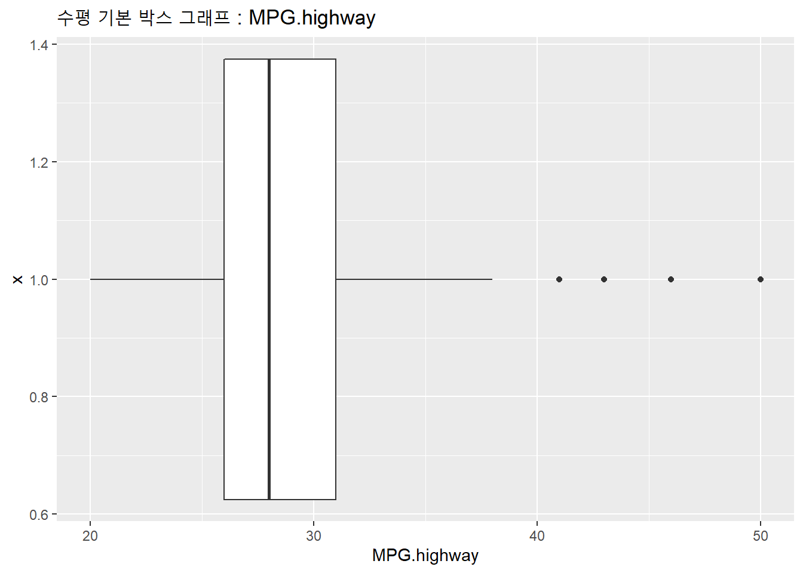
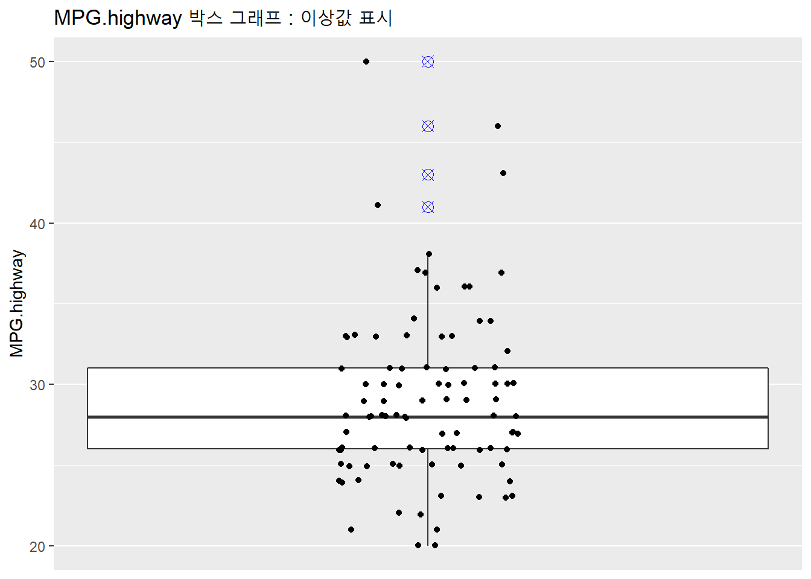
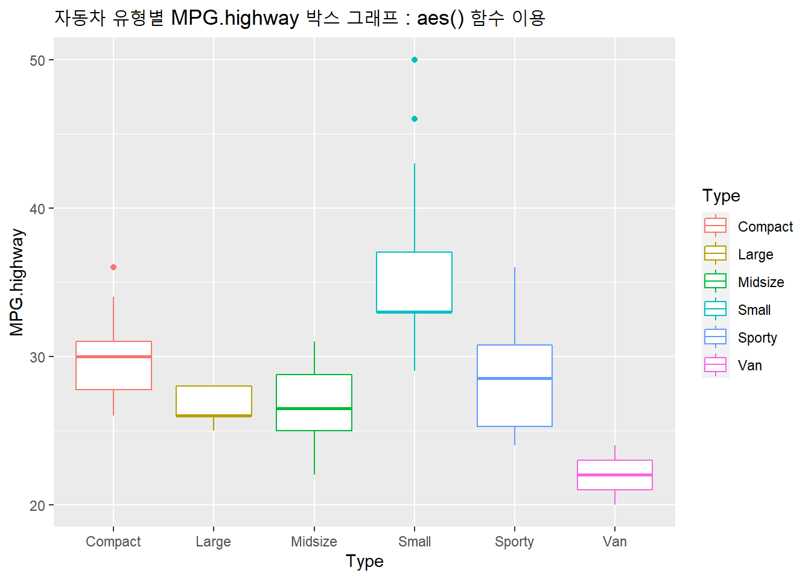
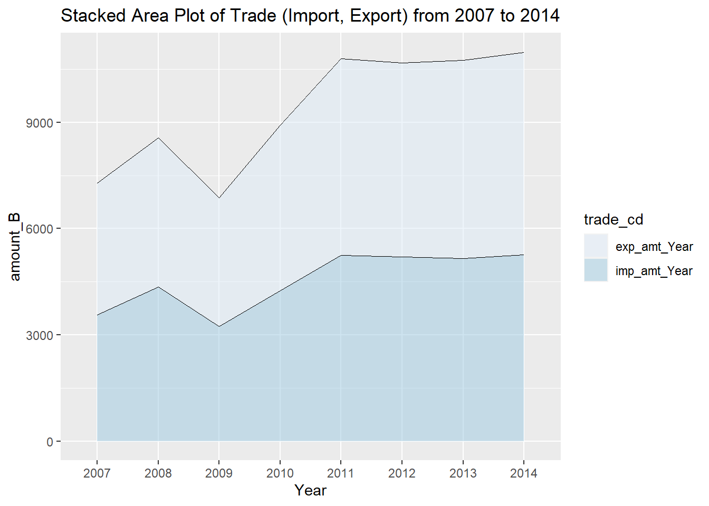

7.1 R ggplot2 히스토그램 (goem_histogram()), 커널 밀도 곡선 (Kernel Density Curve)
데이터셋을 받으면 제일 먼저 하는 일이 데이트의 구조를 파악하고, 변수명, 변수별 데이터 유형(숫자형, 문자형, 논리형), 결측값 여부, 이상치/영향치 여부, 데이터의 퍼진 정도/분포 모양 등을 탐색하게 됩니다.
하나의 연속형 변수에 대한 퍼진 정도/분포 모양와 이상치 여부를 쉽고 빠르게 파악할 수 있는 그래프로 히스토그램(Histogram), 커널 밀도 곡선 (Kernel Density Curve)과 박스그림(Box Plot), 바이올린 그래프 (Vilon Plot) 등 이 있습니다.
[ 변수 개수별 형태별 그래프 종류 ]

7.1.1 히스토그램
히스토그램(Histogram)은 연속형 변수를 일정한 구간(binwidth)으로 나누어서 빈도수를 구한 후에 이를 막대그래프로 그린 그래프입니다.
이번 포스팅에서는 먼저 ggplot2 패키지의 geom_histogram() 를 활용해서 히스토그램을 그리는 방법에 대해서 알아보겠습니다.
데이터는 MASS 패키지에 들어있는 Cars93 데이터 프레임 데이터 셋에서 가격(Price)과 자동차유형(Type) 변수를 활용하여 히스토그램을 그려보겠습니다.
# Cars93 데이터 프레임
library(MASS)
str(Cars93)## 'data.frame': 93 obs. of 27 variables:
## $ Manufacturer : Factor w/ 32 levels "Acura","Audi",..: 1 1 2 2 3 4 4 4 4 5 ...
## $ Model : Factor w/ 93 levels "100","190E","240",..: 49 56 9 1 6 24 54 74 73 35 ...
## $ Type : Factor w/ 6 levels "Compact","Large",..: 4 3 1 3 3 3 2 2 3 2 ...
## $ Min.Price : num 12.9 29.2 25.9 30.8 23.7 14.2 19.9 22.6 26.3 33 ...
## $ Price : num 15.9 33.9 29.1 37.7 30 15.7 20.8 23.7 26.3 34.7 ...
## $ Max.Price : num 18.8 38.7 32.3 44.6 36.2 17.3 21.7 24.9 26.3 36.3 ...
## $ MPG.city : int 25 18 20 19 22 22 19 16 19 16 ...
## $ MPG.highway : int 31 25 26 26 30 31 28 25 27 25 ...
## $ AirBags : Factor w/ 3 levels "Driver & Passenger",..: 3 1 2 1 2 2 2 2 2 2 ...
## $ DriveTrain : Factor w/ 3 levels "4WD","Front",..: 2 2 2 2 3 2 2 3 2 2 ...
## $ Cylinders : Factor w/ 6 levels "3","4","5","6",..: 2 4 4 4 2 2 4 4 4 5 ...
## $ EngineSize : num 1.8 3.2 2.8 2.8 3.5 2.2 3.8 5.7 3.8 4.9 ...
## $ Horsepower : int 140 200 172 172 208 110 170 180 170 200 ...
## $ RPM : int 6300 5500 5500 5500 5700 5200 4800 4000 4800 4100 ...
## $ Rev.per.mile : int 2890 2335 2280 2535 2545 2565 1570 1320 1690 1510 ...
## $ Man.trans.avail : Factor w/ 2 levels "No","Yes": 2 2 2 2 2 1 1 1 1 1 ...
## $ Fuel.tank.capacity: num 13.2 18 16.9 21.1 21.1 16.4 18 23 18.8 18 ...
## $ Passengers : int 5 5 5 6 4 6 6 6 5 6 ...
## $ Length : int 177 195 180 193 186 189 200 216 198 206 ...
## $ Wheelbase : int 102 115 102 106 109 105 111 116 108 114 ...
## $ Width : int 68 71 67 70 69 69 74 78 73 73 ...
## $ Turn.circle : int 37 38 37 37 39 41 42 45 41 43 ...
## $ Rear.seat.room : num 26.5 30 28 31 27 28 30.5 30.5 26.5 35 ...
## $ Luggage.room : int 11 15 14 17 13 16 17 21 14 18 ...
## $ Weight : int 2705 3560 3375 3405 3640 2880 3470 4105 3495 3620 ...
## $ Origin : Factor w/ 2 levels "USA","non-USA": 2 2 2 2 2 1 1 1 1 1 ...
## $ Make : Factor w/ 93 levels "Acura Integra",..: 1 2 4 3 5 6 7 9 8 10 ...ggplot2 패키지를 library()로 호출한 후에 ggplot() 함수의 + geom_histogram() 함수를 사용하여 default 옵션으로 히스토그램을 그리면 아래와 같습니다.
## 히스토그램 (Histogram)
# install.packages("ggplot2") # ggplot2 패키지 설치
library(ggplot2)
# binwidth defaulted to range/30
ggplot(Cars93, aes(x=Price)) + geom_histogram() ## `stat_bin()` using `bins = 30`. Pick better value with `binwidth`.위에 실행결과 콘솔창의 메시지를 보면 “stat_bin: binwidth defaulted to range/30. Use ‘binwidth = x’ to adjust this.”이라는 메시지가 아래 보이는데요, 이는 binwidth를 설정하지 않아서 range/30 디폴트 기준으로 binwidth를 계산해서 그렸다는 뜻입니다.
아래에 실제 범위(range)를 구해서 30으로 나누었더니 1.816 이었고, 이 값을 geom_histogram(binwidth = 1.816) 옵션값이 입력해서 히스토그램을 그려보았더니 위와 같음을 알 수 있습니다.
range(Cars93$Price) ## [1] 7.4 61.9diff(range(Cars93$Price)) ## [1] 54diff(range(Cars93$Price))/30 ## [1] 1.8ggplot(Cars93, aes(x=Price)) +
geom_histogram(binwidth=1.816) +
ggtitle("Binwidth=1.816 ; Default, range/30")
히스토그램에서 중요하면서 어려운 문제 중의 하나가 bin 개수를 몇 개로 할 것인가, 다른 말로 binwidth를 몇 으로 할 것인가 입니다. bin 개수가 너무 많으면 (즉, binwidth가 너무 좁으면) 이빨빠진 머리빗처럼 데이터의 분포 모양을 보기에 부적할 수가 있습니다. 반면에 bin 개수가 너무 적으면 (즉, binwidth가 너무 넓으면) 너무 많은 도수가 하나의 bin에 퉁쳐져서 막대기둥 한두개만 덩그라니 서있게 되어 이 또한 데이터의 분포 모양을 파악하는데 도움이 안되게 됩니다. 적절한 bin 개수를 선정하는게 중요한데요, 아래에 binwidth 를 조절해가면서 히스토그램을 그려봤습니다.
# histograms by various binwidths
h1 <- ggplot(Cars93, aes(x=Price)) +
geom_histogram(binwidth=1.816) +
ggtitle("Binwidth=1.816 ; Default, range/30")
h2 <- ggplot(Cars93, aes(x=Price)) +
geom_histogram(binwidth=5) +
ggtitle("Binwidth=5")
h3 <- ggplot(Cars93, aes(x=Price)) +
geom_histogram(binwidth=10) +
ggtitle("Binwidth=10")
h4 <- ggplot(Cars93, aes(x=Price)) +
geom_histogram(binwidth=20) +
ggtitle("Binwidth=20")
h5 <- ggplot(Cars93, aes(x=Price)) +
geom_histogram(binwidth=30) +
ggtitle("Binwidth=30")
h6 <- ggplot(Cars93, aes(x=Price)) +
geom_histogram(binwidth=40) +
ggtitle("Binwidth=40")
##-----------------
## multiplot function by knitr and Jekyll (author of Cookbook for R)
## 아래 사용자정의 함수를 그대로 카피해서 사용하면 됨
# install.packages("grid")
multiplot <- function(..., plotlist=NULL, file, cols=1, layout=NULL) {
library(grid)
# Make a list from the ... arguments and plotlist
plots <- c(list(...), plotlist)
numPlots = length(plots)
# If layout is NULL, then use 'cols' to determine layout
if (is.null(layout)) {
# Make the panel
# ncol: Number of columns of plots
# nrow: Number of rows needed, calculated from # of cols
layout <- matrix(seq(1, cols * ceiling(numPlots/cols)),
ncol = cols, nrow = ceiling(numPlots/cols))
}
if (numPlots==1) {
print(plots[[1]])
} else {
# Set up the page
grid.newpage()
pushViewport(viewport(layout = grid.layout(nrow(layout), ncol(layout))))
# Make each plot, in the correct location
for (i in 1:numPlots) {
# Get the i,j matrix positions of the regions that contain this subplot
matchidx <- as.data.frame(which(layout == i, arr.ind = TRUE))
print(plots[[i]], vp = viewport(layout.pos.row = matchidx$row,
layout.pos.col = matchidx$col))
}
}
}
##-----------------
# Multiple graphs on one page : multiplot
multiplot(h1, h2, h3, h4, h5, h6, cols=2)
참고로, 위처럼 한개의 화면에 여러개의 그래프를 배열하기 위해서 multiplot() 함수(by knitr and Jekyll)를 사용하였습니다. binwidth = 5 일 때가 위의 6개 그래프 중에서는 상대적으로 가장 적합해 보이므로 아래 예제부터는 binwidth = 5 를 사용하겠습니다.
위의 히스토그램을 보면 거무튀튀하니 그다지 색깔이 아름답지는 않지요? 그러면 이번에는 색 채우기, 경계선 색 지정하기를 해보겠습니다.
# 채우기 색, 경계선 색 : geom_histogram(binwidth, fill, colour)
ggplot(Cars93, aes(x=Price)) +
geom_histogram(binwidth=5, fill = "blue", colour = "black") +
ggtitle("Binwidth=5, fill = blue, colour = black")마지막으로, facet_grid() 를 써서 요인(factor)/집단/그룹별로 히스토그램을 구분해서 그려보도록 하겠습니다. 단, facet_grid()에 들어가는 변수는 요인(factor)형 변수이어야 합니다.
# 요인(factor) 여부 확인, levels 확인
class(Cars93$Type); levels(Cars93$Type)## [1] "factor"## [1] "Compact" "Large" "Midsize" "Small" "Sporty" "Van"# 요인/집단/그룹(factor)별로 나누어서 히스토그램 그리기
ggplot(Cars93, aes(x=Price)) +
geom_histogram(binwidth=5, fill = "blue", colour = "black") +
ggtitle("Binwidth=5, fill = blue, colour = black, group by Type") +
facet_grid(Type ~ .)
위의 히스토그램처럼 자동차의 유형(Type)인 ‘Compact,’ ‘Large,’ ‘Midsize,’ ‘Small,’ ‘Sporty,’ ‘Van’ 의 6개 유형별로 가격(Price)의 히스토그램을 그려보면 서로 한눈에 비교가 가능하니 매우 유용하다고 하겠습니다.
참고로, 위처럼 가로로 비교를 하는 것이 아니라 세로로 세워서 그래프를 그린 후에 비교를 하려면
+ facet_grid(. ~ Type) 처럼 괄호안의 기입 순서를 바꾸어주면 됩니다. 단, 아래에 예시 그래프를 보면 알겠지만, 차종별로 가격의 분포를 비교하기에는 아래 처럼 그래프를 그려서는 안되겠지요? 분석 목적에 맞게 가로로 비교할지, 세로로 비교할지 잘 선택해서 사용하시기 바랍니다.
# 요인/집단/그룹(factor)별로 나누어서 히스토그램 그리기
ggplot(Cars93, aes(x=Price)) +
geom_histogram(binwidth=5, fill = "blue", colour = "black") +
ggtitle("Binwidth=5, fill = blue, colour = black, group by Type") +
facet_grid(. ~ Type) # 수직
7.1.2 커널 밀도 곡선
다음으로, 커널 밀도 추정함수를 가지고 그린 커널 밀도 곡선(kernel density curve)를 그려보겠습니다.
히스토그램은 빈도를 가지고 그리며, geom_histogram()함수를 사용하며, 계단식으로 각이 져 있는데요,
커널 밀도 곡선(kernel density curve)은 확률(모두 더하면 1)을 가지고 그리고, geom_density() 함수를 사용하며, smoothing 된 곡선으로 되어 있습니다.
# 가격 커널 밀도 곡선(Kernel Density Curve)
ggplot(Cars93, aes(x=Price)) +
geom_density(fill = "yellow", colour=NA, alpha=.5) + # alpha 반투명
geom_line(stat="density") +
expand_limits(y=0) +
ggtitle("Kernel Density Curve")# 차종별 가격 커널 밀도 곡선(Kernel Density Curve)_중복
ggplot(Cars93, aes(x=Price, colour = Type)) +
geom_density(fill = NA) +
geom_line(stat = "density") +
expand_limits(y = 0) +
ggtitle("Kernel Density Curve by Car Type_overlap")
# 차종별 가격 커널 밀도 곡선(Kernel Density Curve)_수평
ggplot(Cars93, aes(x=Price)) +
geom_density(fill = "yellow", colour=NA, alpha=.5) +
geom_line(stat="density") +
expand_limits(y=0) +
ggtitle("Kernel Density Curve by Car Type") +
facet_grid(Type ~ .) +
xlim(10, 40) # X축 범위를 지정해줬더니 40 초과하는 값 짤렸다고 경고메시지 뜸## Warning: Removed 13 rows containing non-finite values (stat_density).
## Warning: Removed 13 rows containing non-finite values (stat_density).
*R ggplot2의 커널밀도곡선에서 최대 피크값 좌표를 구하고 수직선을 추가하는 방법은 https://rfriend.tistory.com/485 를 참고*하세요.
7.1.3 히스토그램과 커널 밀도 곡선 겹쳐 그리기
히스토그램과 커널 밀도 곡선을 겹쳐서 그려보도록 하겠습니다.
# Histogram + Kernel Density Curve
ggplot(Cars93, aes(x=Price, y=..density..)) +
geom_histogram(binwidth=5, fill = "blue", colour="white", alpha=0.5) +
geom_density(fill = NA, colour=NA, alpha=0.8) +
geom_line(stat="density") +
expand_limits(y=0) +
ggtitle("Histogram + Kernel Density Curve")
히스토그램의 bin width를 수동으로 설정해주고, bin별로 색깔을 다르게 해서 히스토그램을 그려보겠습니다.
#----------------
# histogram with variable size of bin width and different colors per bins using ggplot2
#----------------
# sample data frame
mydf <- data.frame(var = c(1100, 10000, 100000, 190000, 110000, 220000, 550000, 701000, 790000))
# numeric notation for large numbers
options(scipen = 30)
library("ggplot2")
# fill color with different colors per bins
mydf $group <- ifelse(mydf $var < 10000, 1,
ifelse(mydf $var < 100000, 2,
ifelse(mydf $var < 200000, 3,
ifelse(mydf $var < 500000, 4, 5))))
# breaks of bin
bins <- c(1000, 10000, 100000, 200000, 500000, 800000)
# draw histogram with variable size of bin width and different colors per bins
ggplot(mydf, aes(x= var)) +
geom_histogram(data=subset(mydf, group==1), breaks = c(1000, 10000), fill="black") +
geom_histogram(data=subset(mydf, group==2), breaks = c(10000, 100000), fill="yellow") +
geom_histogram(data=subset(mydf, group==3), breaks = c(100000, 200000), fill="green") +
geom_histogram(data=subset(mydf, group==4), breaks = c(200000, 500000), fill="blue") +
geom_histogram(data=subset(mydf, group==5), breaks = c(500000, 800000), fill="red") +
scale_x_continuous(breaks = bins, limits = c(1000, 800000)) +
xlab("variable 1") +
ylab("count") +
ggtitle("Histogram with different size of bin width and colors") +
theme(plot.title = element_text(hjust = 0.5, size = 14))
다음번 포스팅에서는 Box Plot 을 소개하겠습니다.